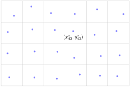
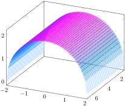
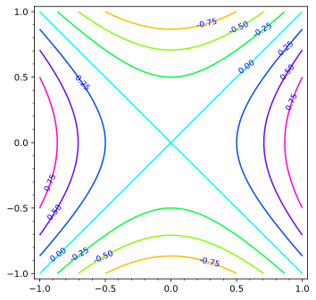
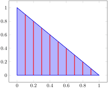
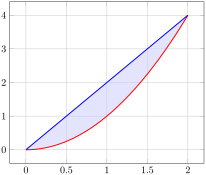

Subsection3.1.1Review of Riemann Integrals in One Variable
Before defining double and triple integrals, let’s review how Riemann integral are defined in single-variable calculus. First, we fix and interval \([a,b]\) over which we wish integrate a function \(f(x)\text{.}\) Next, we partition the interval into \(n\) subintervals \([x_{i-1},x_i]\) of equal length \(\Delta x\text{.}\)
Activity3.1.1.
Which of the following expressions is the length of each subinterval?
\(\displaystyle \Delta x = \frac{b-a}{n-1}\)
\(\displaystyle \Delta x = \frac{b-a}{n+1}\)
\(\displaystyle \Delta x = \frac{b-a}{n}\)
\(\displaystyle \Delta x = b-a\)
Activity3.1.2.
Which of the following expressions is a formula for the endpoints of the subintervals?
\(\displaystyle x_i = a + i \lrpar{ \frac{b-a}{n} }\)
\(\displaystyle x_i = a + i \Delta x\)
\(\displaystyle x_i = i \Delta x\)
\(\displaystyle x_i = i (b-a)\)
Next, we choose a sample point denoted \(x_i^*\) in each subinterval \([x_{i-1},x_i]\text{.}\) Often, we take the sample point to be the left endpoint, righ endpoint, or midpoint of the subinterval.
Activity3.1.3.
For each sample point decide if it’s a left endpoint, right endpoint, midpoint, or something else of the subinterval \([x_{i-1},x_i]\text{.}\)
Which of the following is a Riemann sum of the function \(f(x) = x^2 + 1\) over the interval \([5,11]\) with \(n=7\) subintervals and using sample points that are the right endpoints of the subintervals?
It’s not obvious (i.e. it requires a proof) that this definition is independent of the choice of sample points. In other words, if this limit exists, then you can choose any sample points and the limit will be the same.
Activity3.1.5.
Use the limit definition the Riemann integral to show that
\begin{equation*}
\int_a^b x \ dx = \frac{1}{2}(b^2 - a^2).
\end{equation*}
Subsection3.1.2Double Integrals Over Rectangules
We will extend the above process outlined above to define double integrals. Instead of a function of one variables, we will have a function of two variables \(f(x,y)\text{,}\) and instead of an interval of real numbers, we will have a rectangle in the plane.
But first, let’s consider an example. Emmy is wants to know how much of a toxic pollutant is present in the soil of a rectangular plot of land. To get an estimate, she first divides the plot into subrectangles. In each subrectangle, she extracts a soil sample and measures the concentration of the pollutant.

Let \((x_{ij}^*, y_{ij}^*)\) be the location of the sample from the \(ij\)-th subrectangle and let \(f(x,y)\) be the concentration of the pollutant at location \((x,y)\text{.}\) Emmy now knows the value of the function at many evenly spaced points throughout the plot of land. Making the assumption that the concentration of the pollutant in each subrectangle is roughly the same as the concentration at the sample location \((x_{ij}^*, y_{ij}^*)\text{,}\) she can approximate the total amount of the pollutant as
\begin{equation*}
\text{total quantity of pollutant} \approx \sum_{i=1}^6 \sum_{j=1}^4 f(x_{ij}^*, y_{ij}^*) \Delta A,
\end{equation*}
where \(\Delta A\) is the area of each subrectangle. Clearly, Emmy’s approximation will get better and better as divides the plot into more and more subrectangles. This is the idea behind double integrals.
Definition3.1.1.
Let \(f\) be a continuous function on a rectangle \(R = \{(x,y) : a \leq x \leq b, c \leq y \leq d\}\text{.}\) A double Riemann sum for \(f\) over \(R\) is created as follows.
Partition the interval \([a, b]\) into \(m\) subintervals of equal length \(\Delta x = \frac{b-a}{m}\text{.}\) Let \(x_0\text{,}\)\(x_1\text{,}\)\(\ldots\text{,}\)\(x_m\) be the endpoints of these subintervals, where \(a = x_0\lt x_1\lt x_2 \lt \cdots \lt x_m = b\text{.}\)
Partition the interval \([c, d]\) into \(n\) subintervals of equal length \(\Delta y = \frac{d-c}{n}\text{.}\) Let \(y_0\text{,}\)\(y_1\text{,}\)\(\ldots\text{,}\)\(y_n\) be the endpoints of these subintervals, where \(c = y_0\lt y_1\lt y_2 \lt \cdots \lt y_n = d\text{.}\)
These two partitions create a partition of the rectangle \(R\) into \(mn\) subrectangles \(R_{ij}\) with opposite vertices \((x_{i-1},y_{j-1})\) and \((x_i, y_j)\) for \(i\) between \(1\) and \(m\) and \(j\) between \(1\) and \(n\text{.}\) These rectangles all have equal area \(\Delta A = \Delta x \cdot \Delta y\text{.}\)
Choose a point \((x_{ij}^*, y_{ij}^*)\) in each rectangle \(R_{ij}\text{.}\) Then, a double Riemann sum for \(f\) over \(R\) is given by
\begin{equation*}
\sum_{j=1}^n \sum_{i=1}^m f(x_{ij}^*, y_{ij}^*) \cdot \Delta A.
\end{equation*}
Activity3.1.6.
Let \(f(x,y) = x + 2y\) and let \(R = [0,2] \times [1,3]\text{.}\) Draw a picture of \(R\) and the grid that results from paritioning \([0,2]\) into 2 subintervals and \([1,3]\) into 2 subintervals.
(a)
What are the Caresian coordinates of \((x_2, y_1)\text{?}\)
\(\displaystyle (0,1)\)
\(\displaystyle (1,2)\)
\(\displaystyle (2,3)\)
\(\displaystyle (2,2)\)
(b)
What is the value of \(\Delta A\text{?}\)
\(\displaystyle 1\)
\(\displaystyle 2\)
\(\displaystyle 4\)
\(\displaystyle 6\)
(c)
If we take our sample points \((x_{ij}^*, y_{ij}^*)\) to be the center of each rectangle, what is \((x_{12}^*, y_{12}^*)\text{?}\)
\(\displaystyle (0.5,1.5)\)
\(\displaystyle (1,2)\)
\(\displaystyle (2.5,0.5)\)
\(\displaystyle (0.5,2.5)\)
(d)
Write out all the terms of the Riemann sum
\begin{equation*}
\sum_{j=1}^n \sum_{i=1}^m f(x_{ij}^*, y_{ij}^*) \cdot \Delta A
\end{equation*}
for this scenario without any simlificiation. Then use a calculator to compute the numerical value of the Riemann and give an interpreation of it.
Definition3.1.2.
Let \(R\) be a rectangular region in the \(xy\)-plane and \(f\) a continuous function over \(R\text{.}\) With terms defined as in a double Riemann sum, the double integral of \(f\) over \(R\) is
\begin{equation*}
\iint_R f(x,y) \, dA = \lim_{m,n \to \infty} \sum_{j=1}^n \sum_{i=1}^m f(x_{ij}^*, y_{ij}^*) \cdot \Delta A.
\end{equation*}
Activity3.1.7.
Let \(f(x,y) = \sqrt{4-y^2}\) on the rectangular domain \(R = [1,7] \times [-2,2]\text{.}\) Partition \([1,7]\) into 3 equal length subintervals and \([-2,2]\) into 2 equal length subintervals. A table of values of \(f\) at some points in \(R\) is given in Table 3.1.3, and a graph of \(f\) with the indicated partitions is shown in Figure 3.1.4.
\(-2\)
\(-1\)
\(0\)
\(1\)
\(2\)
\(1\)
\(0\)
\(\sqrt{3}\)
\(2\)
\(\sqrt{3}\)
\(0\)
\(2\)
\(0\)
\(\sqrt{3}\)
\(2\)
\(\sqrt{3}\)
\(0\)
\(3\)
\(0\)
\(\sqrt{3}\)
\(2\)
\(\sqrt{3}\)
\(0\)
\(4\)
\(0\)
\(\sqrt{3}\)
\(2\)
\(\sqrt{3}\)
\(0\)
\(5\)
\(0\)
\(\sqrt{3}\)
\(2\)
\(\sqrt{3}\)
\(0\)
\(6\)
\(0\)
\(\sqrt{3}\)
\(2\)
\(\sqrt{3}\)
\(0\)
\(7\)
\(0\)
\(\sqrt{3}\)
\(2\)
\(\sqrt{3}\)
\(0\)
Table3.1.3.Table of values of \(f(x,y) = \sqrt{4-y^2}\text{.}\)
Figure3.1.4.Graph of \(f(x,y) = \sqrt{4-y^2}\) on \(R\text{.}\)
Sketch the region \(R\) in the plane using the values in Table 3.1.3 as the partitions.
Calculate the double Riemann sum using the given partition of \(R\) and the values of \(f\) in the upper right corner of each subrectangle.
Use geometry to calculate the exact value of \(\iint_R f(x,y) \, dA\) and compare it to your approximation. Describe one way we could obtain a better approximation using the given data.
The integral from single-variable calculus can be interpreted as measuring area under the curve. When the curve lies above the \(x\)-axis, the definite integral is measuring the area above the \(x\)-axis, below the graph \(y = f(x)\text{,}\) and between \(x = a\) and \(x=b\text{.}\) Every Riemann sum will be positive and hence their limit, the definite integral, will also be positive. This is good because the quantity area is usually considered to be a positive quantity.
When the graph crosses the \(x\)-axis somewhere inside the interval \([a,b]\text{,}\) then you need to be careful about how you count the area. You are still measuring the area between the \(x\)-axis and the graph \(y = f(x)\text{,}\) but now the area of the part of the region below the \(x\)-axis gets counted with a negative sign. This is why the integral of \(f(x) = x\) over \([-2,2]\) is zero. The total amount of area above below the \(x\)-axis is the same. Sometimes, we use the phrases net area or signed areato describe what the definite integral measures.
A similar interpretation can be given to the double integral. The double integral of a function \(f(x,y)\) over a rectangle \(R\) is the net volume or signed volume between the graph of \(z=f(x,y)\) and the \(xy\)-plane. Again, this is simply a consequence of the function \(f(x,y)\) taking on negative values, causing some terms in the Riemann sum to be negative.
Double integrals satisfy many of the same properties as single integrals, and their justifications are essentially the same.
Properties of Double Integrals.
Let \(f\) and \(g\) be continuous functions on a rectangle \(R = \{(x,y) : a \leq x \leq b, c \leq y \leq d\}\text{,}\) and let \(k\) be a constant. Then
\(\iint_R (f(x,y) + g(x,y)) \, dA = \iint_R f(x,y) \, dA + \iint_R g(x,y) \, dA\text{.}\)
\(\iint_R kf(x,y) \, dA = k \iint_R f(x,y) \, dA\text{.}\)
If \(f(x,y) \geq g(x,y)\) on \(R\text{,}\) then \(\iint_R f(x,y) \, dA \geq \iint_R g(x,y) \, dA\text{.}\)
Activity3.1.8.
Below is a the contour plot of a function \(f(x,y)\text{.}\) Estimate the value of the double integral
\begin{equation*}
\iint_R f(x,y) \, dA
\end{equation*}
where \(R = [-1,1] \times [-1,1]\) using a Riemann sum with 4 subrectangles (i.e. each interval \([-1,1]\) should be divided into two subintervals) and sample points taken at the lower-left corners of each subrectangle. Interpret your answer in terms of the signed volume between the graph of \(z=f(x,y)\) and the \(xy\)-plane. What do you think the exact value of this double integral is?

Subsection3.1.3Iterated Integrals
To compute the partial derivative of a function \(f(x_1, \ldots, x_n)\) of many variables with respect to \(x_k\text{,}\) we think of the other independent variables as constants. In other words we now have a function
of a single variable, and we can take its derivative in exactly the same way as in single-variable calculus. One can ask the same question about double integrals. What happens if we think of \(y\) (or \(x\)) as a constant and integrate with respect to \(x\) (or \(y\))?
The result of integrating \(f(x,y)\) with respect to \(y\) is a function of \(x\) only.
This process is of nesting integrals is called an iterated integral.
You probably have a few burning questions now. First, does the order in which we integrate matter? If I integrate with respect to \(x\) first and then \(y\) does that change the number I get at the end? Also, note that at no point in the discussion above is a double integral mentioned. You are probably asking yourself, how is an interated integral over a over a rectangle related to a double of the same function of the same rectangle? The answer to both of these questions is answered simply and beautifully by Fubini’s Theorem.
Fubini’s Theorem.
If \(f = f(x,y)\) is a continuous function on a rectangle \(R = [a,b] \times [c,d]\text{,}\) then
\begin{equation*}
\iint_R f(x,y) \, dA = \int_c^d \int_a^b f(x,y) \, dx \, dy = \int_a^b \int_c^d f(x,y) \, dy \, dx.
\end{equation*}
Activity3.1.9.
Which is the correct first step in computing the iterated integral below?
\begin{equation*}
\int_1^2\int_0^3 x^2y^3\, dx\, dy
\end{equation*}
Note that you will be integrating with respect to \(y\text{,}\) and holding \(x\) constant. Your result should be a function of \(x\) only.
Next, use your result from (a) along with the Fundamental Theorem of Calculus to determine the value of \(\int_{-3}^3 A(x) \, dx\text{.}\)
What is the value of \(\iint_R f(x,y) \, dA\text{?}\) What are two different ways we may interpret the meaning of this value?
Activity3.1.11.
Use Fubini’s Theorem to evaluate the double integral
\begin{equation*}
\iint_R (x^2 - y^2) \, dA
\end{equation*}
where \(R = [-1,1] \times [-1,1]\text{.}\) (The contour plot of this function was used to estimate the value of this integral in Activity 3.1.8. Does the exact value determined here match your estimate?)
Activity3.1.12.
Let \(f(x,y) = x+y^2\) on the rectangle \(R = [0,2] \times [0,3]\text{.}\)
Evaluate \(\iint_R f(x,y) \, dA\) using an iterated integral. Choose an order for integration by deciding whether you want to integrate first with respect to \(x\) or \(y\text{.}\)
Evaluate \(\iint_R f(x,y) \, dA\) using the iterated integral whose order of integration is the opposite of the order you chose in (a).
Activity3.1.13.
Compute \(\ds \iint_R xe^y\, dA\text{,}\) where \(R = [0,1]\times[-1,1]\)
Remark3.1.5.
Notice that when you integrate a function that can be written \(f(x,y) = g(x)h(y)\) over a rectangle, the double integral is the product of two single integrals.
Subsection3.1.4Double Integrals Over General Regions
Technically speaking, both the definition of the double integral and interated integrals depended crucially on the fact that the region of integration was a rectangle. Suppose we wish to integrate \(f(x,y)\) over a more general, non-rectangular region \(D\text{.}\) We start by defining a new function that equal \(f\) inside of \(D\) and equals zero outside of it.
\begin{equation*}
F(x,y) = \begin{cases} f(x,y) & \text{ if } (x,y) \in D \\ 0 & \text{ if } (x,y) \notin D \end{cases}
\end{equation*}
Then we define the integral of \(f\) over \(D\) to be the integral of \(F\) over some rectangle \(R\) that contains \(D\text{.}\)
\begin{equation*}
\iint_D f(x,y) \, dA = \iint_R F(x,y) \, dA.
\end{equation*}
Note that this requires that \(D\) be bounded. In practice, we just ignore everything that is in \(R\) but not in \(D\text{,}\) since these regions contribute \(0\) to the value of the integral.
This introduces a new complication to our main tool for evaluating double integrals, iterated integrals. The bounds of integration may now depend on where we are in the region \(D\text{.}\) For example, suppose \(D\) is the triangle in the first quadrant with vertices at \((0,0)\text{,}\)\((1,0)\text{,}\) and \((0,1)\text{.}\) If we wish to integrate with respect to \(y\) first, the when \(x = 0.3\text{,}\) the bounds of integration should be \([0, 0.7]\text{.}\) And when \(x = 0.6\text{,}\) then the bounds of integration should be \([0, 0.4]\text{.}\)

In the figure, each vertical red line segment represents a trace of the region \(D\) at a fixed value of \(x\) along which we are integrating with respect to \(y\text{.}\) Although the bounds change for different values of \(x\text{,}\) they change in a predictable way. In fact, the upper bound of integration is a simple function of \(x\text{.}\) For any vertical trace, the lower bound of integration is \(y = 0\) and the upper bound is \(y = 1-x\text{.}\) So, the first integral is
The result of this integral is still just a function of \(x\text{,}\) and the range of \(x\) values that we want to include in our integral is \([0,1]\text{.}\) So, the second integral is
This procedure works if \(D\) is bounded by two vertical lines and the graphs of two functions of \(x\text{.}\) In other words, if \(D\) can be described as \(a \leq x \leq b\) and \(g_1(x) \leq y \leq g_2(x)\text{.}\) In this case,
\begin{equation*}
\iint_D f(x,y) \, dA = \int_{x=a}^{x=b} \int_{y=g_1(x)}^{y=g_2(x)} f(x,y) \, dy \, dx.
\end{equation*}
These types of regions are sometimes called type I regions. Alternatively, turning your head 90 degrees, you can also imagine regions that are bounded by two horizontal lines and the graphs of two functions of \(y\text{.}\) These are called type II regions and are described by \(c \leq y \leq d\) and \(h_1(y) \leq x \leq h_2(y)\text{.}\) In this case,
the limits on the outer integral must be constants;
the limits on the inner integral must be constants or in terms of only the remaining variable — that is, if the inner integral is with respect to \(y\text{,}\) then its limits may only involve \(x\) and constants, and vice versa.
Activity3.1.14.
The image below is a Type I and a Type II region; call it \(R\text{.}\)

(a)
Which set describes \(R\) as a Type II region?
\(0 \leq x \leq 2\) and \(x^2 \leq y \leq 2x\)
\(0 \leq x \leq 4\) and \(x^2 \leq y \leq 2x\)
\(\frac{y}{2} \leq x \leq \sqrt{y}\) and \(0 \leq y \leq 4\)
\(\frac{y}{2} \leq x \leq \sqrt{y}\) and \(0 \leq y \leq 2\)
(b)
Which set describes \(R\) as a Type I region?
\(0 \leq x \leq 2\) and \(x^2 \leq y \leq 2x\)
\(0 \leq x \leq 4\) and \(x^2 \leq y \leq 2x\)
\(\frac{y}{2} \leq x \leq \sqrt{y}\) and \(0 \leq y \leq 4\)
\(\frac{y}{2} \leq x \leq \sqrt{y}\) and \(0 \leq y \leq 2\)
Activity3.1.15.
The base of a prism is the triangle in the \(xy-\)plane bounded by the \(y-\)axis, the line \(y=x\text{,}\) and the line \(y=1\text{.}\) The top of the prism lies in the plane \(z = 5-y-x\text{.}\)
(a)
Sketch and label the region.
(b)
If we consider region as Type I, which integral will compute the volume of the prism?
Choose to use (b) or (c) to compute the value of the integral.
Activity3.1.16.
Let \(f(x,y) = x^2y\) be defined on the triangle \(D\) with vertices \((0,0)\text{,}\)\((2,0)\text{,}\) and \((2,3)\text{.}\) Compute
\begin{equation*}
\iint_D f(x,y) \, dA.
\end{equation*}
Activity3.1.17.
Consider the iterated integral
\begin{equation*}
\int_{x=0}^{x=1} \int_{y=x}^{y=\sqrt{x}} (4x+10y) \, dy \, dx\text{.}
\end{equation*}
Sketch the region of integration, \(D\text{,}\) for which
\begin{equation*}
\iint_D (4x + 10y) \, dA = \int_{x=0}^{x=1} \int_{y=x}^{y=\sqrt{x}} (4x+10y) \, dy \, dx.
\end{equation*}
Determine the equivalent iterated integral that results from integrating in the opposite order (\(dx \, dy\text{,}\) instead of \(dy \, dx\)). That is, determine the limits of integration for which